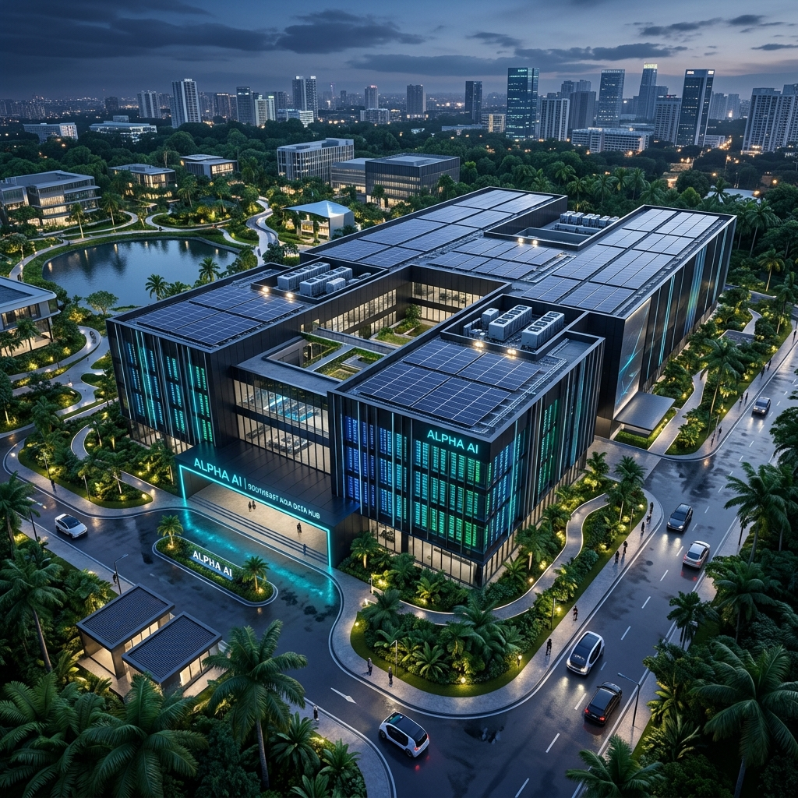

亞太數位基建新星：越南次世代 AI 算力中心
—— 綠地開發與遠期包銷專案
Next-Generation AI Data Center in Vietnam
—— BTS Development & Pre-Committed Forward Purchase
隨著全球 AI 算力需求迎來結構性爆發，具備強勁電網擴充彈性與政策紅利的東南亞，正成為亞太區最受矚目的數位基礎設施新星。晉昌國際憑藉卓越的跨境資產佈局與深厚的屬地資源，全面主導「越南次世代 AI 算力中心」之客製化自建（Build-to-Suit）與遠期包銷專案，為全球機構合夥人與科技巨頭，在具備高度成長動能的市場中，開闢一條低風險、高確定性的頂級資產配置通道。
As global AI compute demand experiences a structural explosion, Southeast Asia—empowered by flexible grid scalability and policy incentives—has emerged as APAC's premier digital infrastructure hotspot. Leveraging strategic cross-border positioning and deep localized networks, Jin Chang Development Group leads the Build-to-Suit (BTS) development and pre-committed Forward Purchase of the "Vietnam Next-Generation AI Data Center," providing institutional partners and tech hyperscalers with a low-risk, high-certainty asset configuration channel.

為什麼選擇我們？五大核心落地賦能優勢 Why Partner With Us? 5 Core Execution Advantages
特許政策導航與官方綠色通道 Special Policy Navigation & Green Channel
憑藉與越南當地政府核心決策層的直接對接實力，我們將繁複的跨國法規審查轉化為高效的綠色通道。無論是超大型資料中心特許營業執照申請、土地地目變更，或是嚴格的環境影響評估（EIA）審批，皆能實現政策級的快速通關（Fast-tracking），大幅縮短專案前期開發時程，搶占算力市場先機。 Direct engagement with local government leadership streamlines complex regulatory processes into a fast-tracked green channel. From hyper-scale DC operating licenses and land-use conversions to environmental impact assessments (EIA), we accelerate pre-development timelines to capture market leadership.
跨境資本安全與合規金流架構 Cross-Border Capital Safety & Funds Architecture
針對 AI 算力中心龐大的跨國資本支出（CAPEX），我們為機構合夥人設計最優化、合法的跨境金流路徑。精準駕馭越南在地外匯管制規範與國際稅務架構，確保您的每一筆建設資金從安全匯入，到未來的利潤合法回流（Repatriation），皆受到最高級別的法規防護。 Designing compliant cross-border financial structures for substantial CAPEX deployments. Navigating Vietnamese foreign exchange controls and international tax frameworks ensures seamless capital injection and legitimate dividend repatriation under regulatory insulation.
任務關鍵基礎設施的硬核整合力 Mission-Critical Infrastructure Integration
AI 伺服器集群對電力與冷卻的苛刻要求，是專案落地的決勝點。我們已深度整合當地關鍵的硬性條件，確保專案在動土前即鎖定「特高壓專用電網容量」、「高頻寬國際光纖骨幹」以及「支援次世代液冷技術（Liquid Cooling）之龐大水資源」，100% 滿足 Hyperscaler（超大規模雲端服務商）的極致規格。 AI server clusters demand rigorous power and thermal management. We secure EHV power grid capacity, high-bandwidth international fiber backbones, and abundant water resources for next-gen Liquid Cooling prior to groundbreaking—fully compliant with Hyperscaler specifications.
屬地化法務防護與在地即時排障 Localized Legal Insulation & Risk Mitigation
結合熟稔越南土地法與外資投資法的資深顧問團隊，從最源頭的土地產權理清（Title Clearance）、跨國商業合約擬定，到各類在地突發障礙的即時排除，為專案建立起全方位的風險隔離（Risk Insulation）機制，確保您的資產權益堅不可摧。 Supported by legal experts versed in Vietnamese Land and Foreign Investment Laws. From root title clearance and cross-border contracting to real-time local troubleshooting, we establish robust risk insulation around partner assets.
高階實地盡職調查與決策陪同 Executive On-Site Due Diligence & Escort
我們拒絕紙上談兵。專案提供「決策層專屬的實地商務考察」，由本機構具備豐富跨境經驗的高階主管親自陪同帶領，深入越南核心經濟特區，實地探勘關鍵工程節點並直接會晤在地供應鏈高層，將未知的跨國市場變數，轉化為可精準量化的決策數據。 We reject speculative reporting. We provide executive-level on-site commercial delegations, led personally by our senior cross-border executives through Vietnam's core economic zones to inspect key engineering milestones and engage directly with top local supply chain partners.
PROJECT TITAN 專案技術與盲測指標矩陣 PROJECT TITAN Technical & Data Matrix
以下數據摘錄自《Project Titan Tier-1 AI Data Center Strategic Asset (Vietnam) Blind Investment Teaser》，為機構投資者提供客觀量化的實體與財稅參考。 Extracted from the official Project Titan Blind Investment Teaser for Tier-1 AI DC asset evaluation in Vietnam.
STRATEGIC CORE VALUES | 項目核心亮點 01 STRATEGIC CORE VALUES
- NVIDIA Blackwell Ready: 土地已完成全面平整與前期工程規劃，技術標準完全相容並支持下一代 NVIDIA Blackwell Ultra (B300) 算力系統的高密度部署需求。 Fully graded land & pre-engineering ready. Fully compliant to support next-gen NVIDIA Blackwell Ultra (B300) high-density compute clusters.
- 100% Legal Safeguard: 已取得至 2078 年的長期土地使用權證（LURC）。法定規劃（1/500 細部規劃）已正式獲批，明確限定為「資料中心與電信基礎設施」專用。 Secured LURC through 2078. Statutory 1/500 detailed masterplan officially approved specifically for "Data Center & Telecom Infrastructure".
- Asset Security: 產權絕對清晰，保證 100% 純淨土地。無任何銀行抵押、融資質押或任何形式的第三方財務及法律糾紛負擔。 100% unencumbered clean land title. Zero bank mortgage, pledges, or third-party liabilities.
🔥 戰略級財稅激勵政策 (Unrivaled Fiscal Incentives) 🔥 Unrivaled Fiscal Incentives
企業所得稅優惠：前 15 年享受 10% 特惠稅率（遠低於標準稅率）。
Corporate Tax: 10% preferential CIT for first 15 years.
極致免稅期：營運首 4 年享有 100% 全額免稅，隨後 9 年享有 50% 稅減免。
Tax Holiday: 100% tax holiday first 4 yrs, 50% reduction next 9 yrs.
進口關稅豁免：用於資料中心建設與營運的機械設備、硬體系統及原始零部件，完全免徵進口關稅。
Import Tariff: 0% duty on DC machinery, hardware & raw components.
POWER & TELECOM REDUNDANCY | 頂級電力與網通配置 02 POWER & TELECOM REDUNDANCY
- 國家級多路電網支援： 接入國家 500kV 骨幹電網，並同時由多個已投入運行的獨立 110kV/220kV 變電站提供雙迴路供電，確保龐大的電力負載彈性與餘裕。 Direct connection to National 500kV grid, backstopped by multiple active 110kV/220kV substations for dual-circuit power redundancy.
- 能源自主權： 已正式獲批可在園區內直接興建 110kV 專用降壓變電站，並允許配置獨立的緊急備用燃料儲存庫。 Approved for dedicated on-site 110kV step-down substation & isolated backup fuel storage depot.
-
抗單點故障 (Anti-SPOF) 電信架構：
🌐 超高頻寬：800 Gbps (DWDM) 密集波分複用高容量頻寬直通基地邊界。📡 物理隔離管溝：100% 全地下化管線，經由兩個完全獨立、無共用節點或電桿之傳輸路徑。⚡ 國際連線 SLA：保證 99.99% 可用性，< 50ms 自動斷線切換機制。⏱️ 極低延遲 (RTT)：至香港 (Hong Kong) 與新加坡 (Singapore) 雙向往返時間穩定鎖定在 26 - 27 ms。
SITE OPTIONS & TECHNICAL MATRIX | 土地標的物盲測數據對比 03 SITE OPTIONS & TECHNICAL MATRIX
為配合不同投資機構的部署策略（超大型單體廠房 vs. 園區化生態系），本項目提供兩款完全整平且具備高容積的土地標的選擇：
Tailored for flexible institutional deployment strategies (Single Hyper-scale Facility vs. Campus Ecosystem):
| 技術指標 Parameter Parameter | 方案 A：工業與基礎設施地塊 (Option A) Option A: Industrial / Infrastructure Plot | 方案 B：商業與科技園區地塊 (Option B) Option B: Commercial / Campus Plot |
|---|---|---|
| 定位與功能 Primary Usage |
Industrial/Infrastructure Plot 專為大型資料中心、高算力基礎設施及超大型機房量身打造。 Bespoke for hyper-scale data centers & high-density compute facilities. |
Commercial/Campus Plot 適用於彈性科技園區、研發中心、總部大樓及相關配套服務設施。 Ideal for tech campus, R&D centers, corporate HQs & support amenities. |
| 總占地面積 Total Land Area |
5.0 公頃 (Hectares) 縱深尺寸：約 253m × 197m |
3.7 公頃 (Hectares) 縱深尺寸：約 370m × 100m |
| 建築覆蓋率 Coverage Ratio (BCR) |
60% | 60% |
| 物流與聯外交通 Logistics & Access |
配備雙面臨路優勢，臨接路寬分別為 33米 與 23.5米 的交通廊道。 Dual road frontages facing 33m and 23.5m wide transport corridors. | 具備優異的戰略性面寬，直接與 33米 及 105米 的區域主要幹道相連。 Strategic frontage connected directly to 33m & 105m primary regional arterials. |
🌊 環境風險緩釋與地質報告 (Environmental & Geological Advantage) 🌊 Environmental & Geological Advantage
自然地面標高介於 +3.2米 至 +3.5米 之間（ASL），遠高於該區域歷史最高洪湧紀錄的 +1.80米，從根本上杜絕水患對高價值 GPU 算力資產的威脅。
Natural elevation at +3.2m ~ +3.5m ASL, far exceeding historic flood level (+1.80m), permanently mitigating water damage risks to high-value GPU assets.
地質結構極為優異，為 10 米深度的同質砂質地層（Homogeneous sandy structure），承載力強。基礎工程僅需採用 1.5米至 2.5米的獨立基礎（Isolated footings）即可滿足負載，完全免除昂貴的打樁（Piling）成本。
Superior 10m homogeneous sandy soil bearing capacity requires only 1.5m~2.5m isolated footings, completely eliminating costly foundation piling.
OPERATIONAL EXPENDITURE & FAST-TRACK GUARANTEE | 營運支出與交割保證 04 OPERATIONAL EXPENDITURE & FAST-TRACK GUARANTEE
基礎設施維護費
Infrastructure Management
在區域市場中極具成本競爭力，利於長期營運控管。
Highly competitive OPEX control across regional market benchmarks.
公用事業水電供應
Utility Security
水務：由區域水務局系統直接引入專用市政供水管道，保障高可用運維冷卻水需求。
電力批發價：嚴格執行由越南國家電力公司（EVN）統一管理制定的法定電價，結構穩定透明。
Water: Municipal pipeline connection for high-uptime liquid cooling.
Power: Regulated transparent power tariffs managed by EVN.
快捷交割與行政承諾 (Fast-Track Transfer Protocol)
Fast-Track Transfer Protocol
核心投資防禦：遠期承諾，全面隔離市場去化風險 Core Investment Defense: Forward Purchase & Occupancy Risk Insulation
本專案採用機構級的「遠期包銷（Forward Purchase）」機制。在專案破土動工之際，即與預先審定的國際級終端營運商或大型數位基礎設施基金簽訂統包交付（Turnkey Delivery）合約。
這意味著在整個建設週期中，市場波動與出租率（Occupancy）風險已被完全隔離。當資料中心完工並通過試運營驗收時，即自動觸發包銷交割條款，實現資產產權轉移與資金清算，為您的資本提供高確定性、預先鎖定的高額溢價回報。
This project operates under an institutional-grade Forward Purchase framework. Prior to groundbreaking, a Turnkey Delivery agreement is pre-committed with pre-vetted international hyperscaler operators or global infrastructure funds.
Market volatility and occupancy risks are completely insulated throughout the construction cycle. Upon completion and operational acceptance testing, ownership transfer and capital settlement are triggered automatically, delivering high-certainty, pre-locked premium yields for your capital.
機構投資人關係聯絡 Institutional Partner Relations
本專案僅受理合格機構投資者與特定交易對手之諮詢，不對公眾開放零售業務。如需索取專案詳細資訊或預約高階實地考察，請洽機構合夥人關係專用信箱：
Inquiries strictly restricted to qualified institutional investors and eligible counterparties. To request the confidential project memorandum or schedule an executive on-site delegation, please contact: